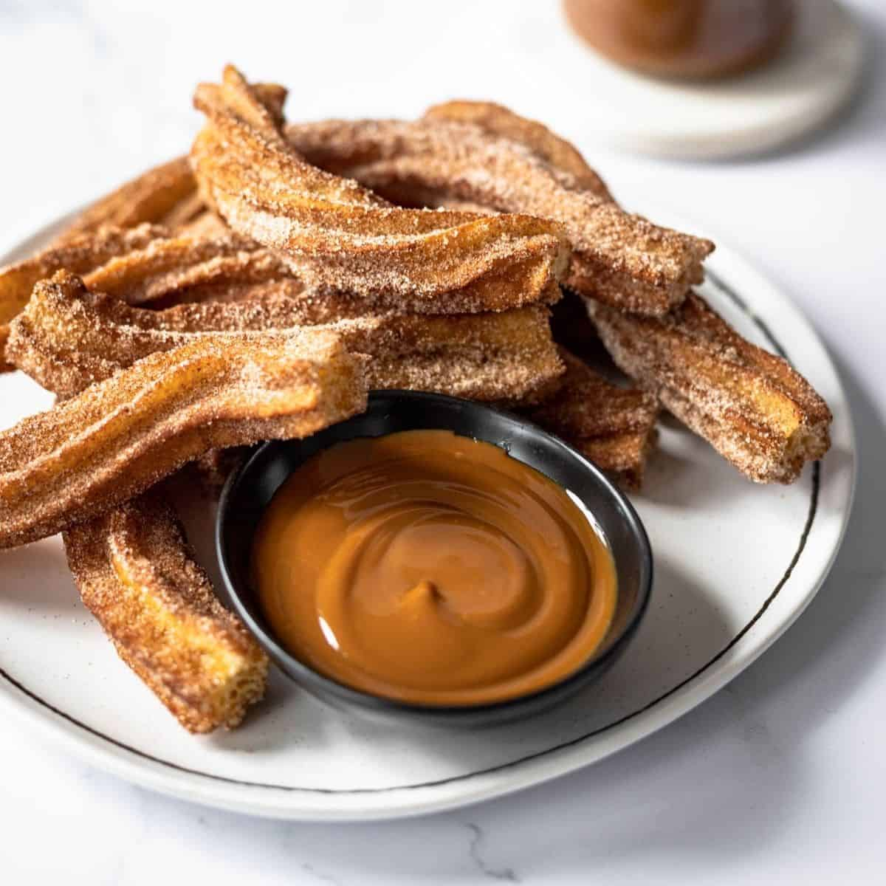

Churros
by Odin Recipes

Description
Warm, fried, crispy dough with a soft and light inside rolled in cinnamon sugar and served with warm dulche de leche. Made with simple pantry ingredients and impossible to resist!
Ingredients
- 1 cup water (240ml)
- 6 tbsp unsalted butter (85g)
- 1 Tbsp granulated sugar (13g)
- 1/2 tsp salt
- 1 cup all-purpose flour (120g)
- 3 large eggs
- 1 tsp vanilla extract
- Vegetable oil for frying
Cinnamon sugar
- 3/4 cup sugar
- 2 tsp cinnamon
Method
- In a large saucepan, bring the water, butter, salt and sugar to a rolling boil over medium-high heat. When it boils, immediately take the pan off the heat.
- Stirring with a wooden spoon, add all the flour at once and stir hard until all the flour is incorporated, 30 to 60 seconds.
- Return to the heat and cook, stirring, 30 seconds. Scrape the mixture into a mixer fitted with a paddle attachment (or use a hand mixer).
- Mix at medium speed. With the mixer running, add 3 eggs, 1 egg at a time, as well as the vanilla. Stop mixing after each addition to scrape down the sides of the bowl. Mix until the dough is smooth and glossy and the eggs are completely incorporated. The dough should be thick, but should fall slowly and steadily from the beaters when you lift them out of the bowl. If the dough is still clinging to the beaters, add the remaining 1 egg and mix until incorporated.
- Heat oil to 370F
- Using a pastry bag fitted with a large star tip.
- Pipe 6 inch pieces using an 869 or large closed star tip. It's best to fry about three at a time.
- Fry on either side for 90 seconds to 2 minutes or until golden brown.
- Remove with tongs and allow to drain on a paper towel for about thirty seconds before placing in the cinnamon sugar. Spoon sugar over, remove excess and serve with warm dulche de leche.
Back to top
Home